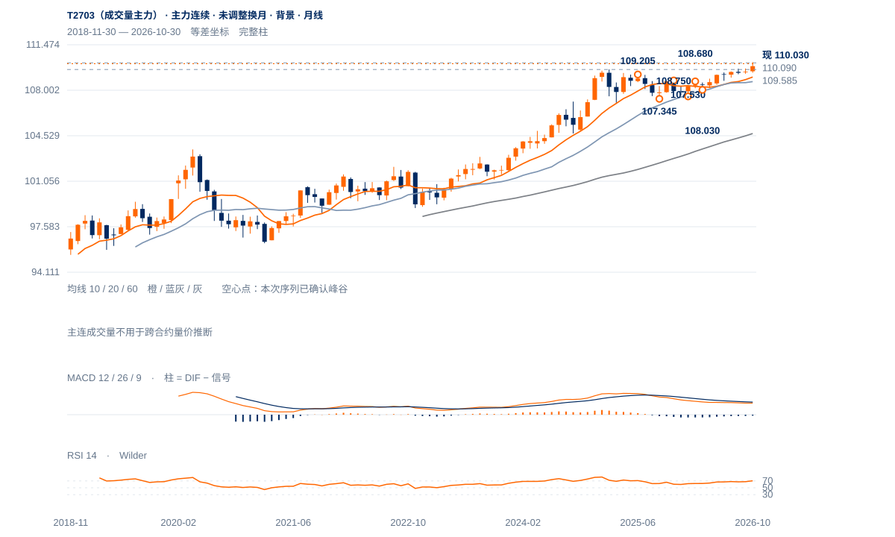

守谷回收后整理
未来1—5个交易日偏守谷后的区间修复，110.115—110.140仍是上方主要检验；ER20仅0.085，短线来回多于净推进，未越界前不提高为单边上涨。
未来1—5个交易日偏守谷后的区间修复，110.115—110.140仍是上方主要检验；ER20仅0.085，短线来回多于净推进，未越界前不提高为单边上涨。
未来2—6周以“守谷回收后整理”为基准。实际12月合约的守边仍需与3月接续合约分别验证，移仓不能当作新增方向确认。完整60分钟收回110.140，随后完整15分钟保持；原110.295连续两日升级门槛保留。109.95原两日下破未成立；原109.730实际谷日收失效线保留。16日109.750为当前回收低，109.995为18日日内低，两者不混用。
未来1—3个月转看T2703自身：16日109.585探低、17—18日收回109.655旧谷，仍属恢复候选；日收再失109.585否定该承接，先收回110.00—110.075，再看110.205。主连月线均衡108.661只作背景，不以跨月价差平移12月目标。

展开图表 ↗品种长期背景保持重心上移，但主连换月图只作背景。实际12月合约109.730较高谷仍是中期边界，110.295前高尚未被有效突破。完整10月20月均衡108.661；本月价格变化尚未成为已完成月线确认。
已完成周线的主要锚点：2026-08-18高109.650；2026-08-28低109.225；2026-09-30低109.260。周级较高谷尚保留，但需要实际两合约价格越界，才能把日线回收提高为趋势恢复。本周仍未结束，18日表现只作进行中周的观察。
18日T2612收110.035、T2703收109.905，均较17日涨0.025；近月高110.080仍未越110.115—110.140原回收带。16日109.755低于109.95后17—18日已收回，原109.95连续两日向下过滤没有成立，109.730实际谷亦未破。近月减仓25470、远月增26515，两月合计仅增1045手，首先反映移仓，不能把远月增仓单独当成方向性买入。
2026-09-30低109.260（2026-10-14确认）；2026-11-02低109.730（2026-11-09确认）；2026-11-06高110.295（2026-11-13确认）
完整60分钟收回110.140，随后完整15分钟保持；原110.295连续两日升级门槛保留。
109.95原两日下破未成立；原109.730实际谷日收失效线保留。16日109.750为当前回收低，109.995为18日日内低，两者不混用。
双合约同涨且两日守回旧谷，支持修复比17日更稳定；若突破小时修复线，区间基准应向上调整。总持仓近乎平移、当日净幅很小，又不足证明新增趋势需求。
RSI14 53.68；ATR14 0.153；相对成交量1.11倍；ER20 0.085。
完整周线至11月13日，完整月线至10月30日；本周与11月尚未结束。主连未调整换月，仅作背景；3月合约关口独立使用。